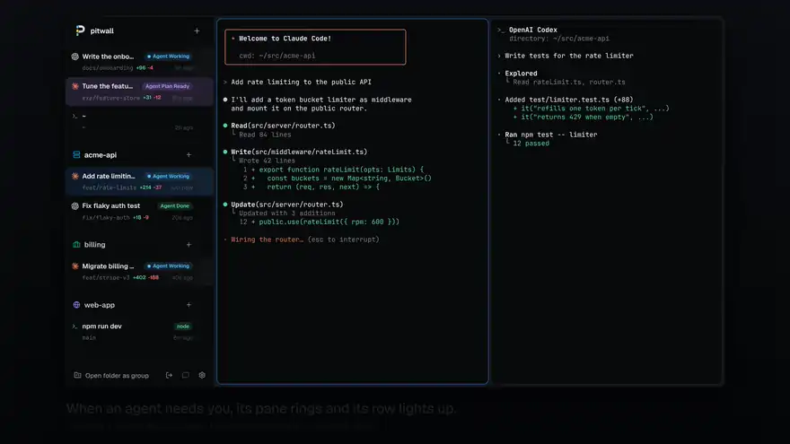
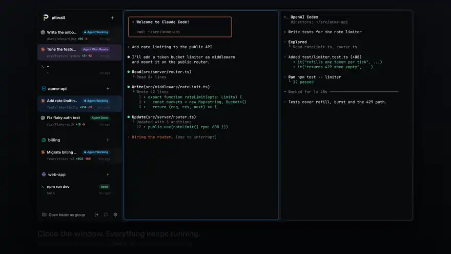
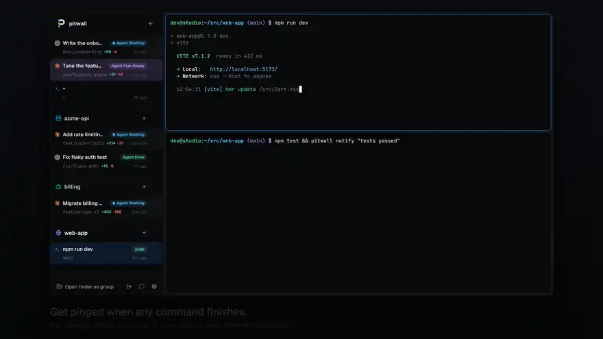
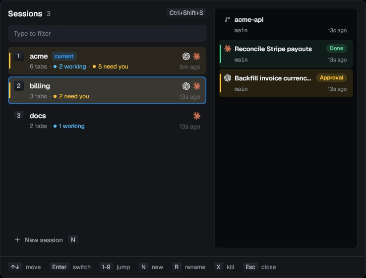

One agent asks, one key, approved
You are reading code in one tab while three agents work in others. You do not watch them.
- A Codex pane finishes in the background and rings green.
- The billing agent asks for approval. Its row turns yellow and you get a desktop notification.
- Ctrl+Shift+U jumps to it, in any session. Press it again for the next one.
With hooks installed the states are exact. Without them, pitwall reads Claude Code, Codex and pi from the screen.


Survives the window and a reboot
A background daemon owns every terminal. Close the window and the agents keep working. After a reboot, tabs come back in their folders with agents resumed where they left off.

Any command can ask for you
npm test && pitwall notify "tests passed" rings the pane it ran in. Bells and terminal notifications (OSC 9, 777, 99) ring it too. No hooks needed.

Sessions, like tmux
One session per project, each with its own sidebar. The switcher shows how many agents are working and how many need you, and draws a session's sidebar before you switch.
Install
The install script downloads the latest release, checks it against the release's checksums and installs pitwall in ~/.local/bin. pitwall is in beta: used every day on Linux, new on macOS and Windows.
Homebrew, on macOS or Linux
brew install quanticstudios/tap/pitwallScoop, on Windows
scoop bucket add quanticstudios https://github.com/quanticstudios/scoop-bucket
scoop install pitwallOr the install script, on Linux or macOS
curl -fsSL https://raw.githubusercontent.com/quanticstudios/pitwall/main/scripts/get.sh | shWindows, in PowerShell
irm https://raw.githubusercontent.com/quanticstudios/pitwall/main/scripts/get.ps1 | iexThen
pitwallThe first window lists the agents it found on your PATH, installs their hooks with one button, and starts one in a tab.
Docs
- Using pitwallWatching agents, sessions, tabs and panes, worktrees
- KeybindingsBoth presets, tab mode, pane mode, find
- Command lineEvery command, and driving tabs from scripts
- Configurationconfig.toml, themes, fonts
- HooksWhat the installer changes for each agent
- PhoneAnswer agents from your phone
- Remote hostsAgents on another machine over ssh
- DecisionsApproval recommendations and triage
- InstallPlatform notes, updates, building from source